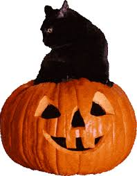

Ivy Macbeth
How is Halloween Celebrated in Mexico?
Halloween is celebrated in Mexico on October 31st, but it’s often closely tied with
Día de los Muertos (Day of the Dead), which takes place on November 1st and 2nd.
While Halloween focuses on costumes and fun, Día de los Muertos is about honoring
and remembering loved ones who have passed away.
Common Halloween activities include:
- Costumes: Kids dress up in spooky (ghosts, skeletons, witches) or fun (cartoon characters, superheroes) outfits.
- Trick-or-treating: Known as “pedir calaverita” (asking for little skulls). Children go door-to-door saying “¿Me da mi calaverita?” and receive candy or coins.
- Decorations: Some homes and stores put up pumpkins, bats, and spider webs, similar to U.S. Halloween décor.
